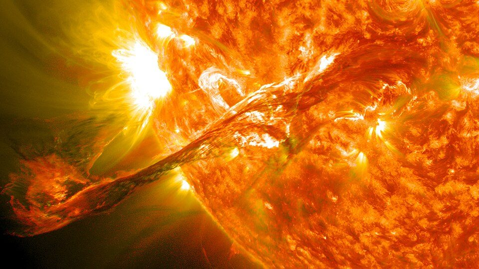
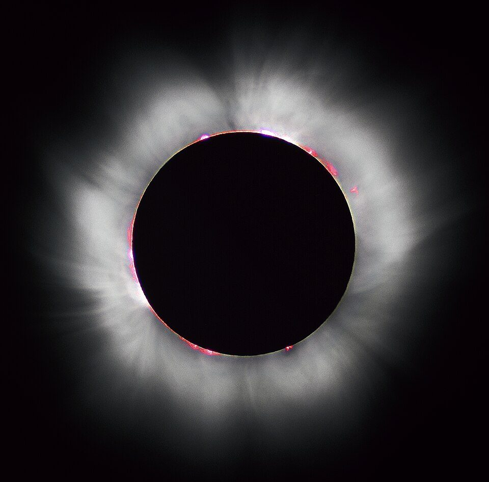

El Sol
Una estrella corriente que, a 150 millones de kilómetros, nos da luz, calor y la energía de casi toda la vida en la Tierra.


El Sol es una estrella de tipo G, lo que los astrónomos llaman una enana amarilla, aunque en realidad su luz es blanca: la atmósfera terrestre la tiñe de amarillo. Es una esfera de plasma de 1,39 millones de kilómetros de diámetro, tan grande que dentro cabrían 1,3 millones de Tierras.
Un reactor nuclear natural
En su núcleo, a unos 15 millones de grados, el hidrógeno se fusiona para formar helio. Cada segundo el Sol convierte unos 600 millones de toneladas de hidrógeno en helio, y unos 4 millones de toneladas de esa masa se transforman en energía, tal como predice la famosa fórmula de Einstein, E = mc².
Esa energía tarda muchísimo en salir. Los fotones rebotan dentro de la zona radiativa durante decenas de miles de años, quizá más de 100.000, antes de llegar a la zona convectiva, donde el gas caliente sube y baja como el agua hirviendo. Desde la superficie, la luz solo necesita 8 minutos y 20 segundos para alcanzar la Tierra.
Las capas del Sol
- Núcleo: donde se produce la fusión, a 15 millones de °C.
- Zona radiativa: la energía avanza a base de absorberse y reemitirse.
- Zona convectiva: corrientes de gas que transportan el calor hacia fuera.
- Fotosfera: la «superficie» visible, a unos 5.500 °C.
- Cromosfera: una capa rojiza que solo se ve bien en los eclipses.
- Corona: la atmósfera exterior, que inexplicablemente está a más de un millón de grados.

.jpg){kind=link}
Manchas, fulguraciones y tormentas
La actividad del Sol sigue un ciclo de unos 11 años. En el máximo aparecen muchas manchas solares, regiones más frías y oscuras atravesadas por campos magnéticos intensos. Cuando esos campos se reorganizan de golpe liberan fulguraciones y eyecciones de masa coronal: nubes de miles de millones de toneladas de plasma lanzadas al espacio.
Si una de esas nubes alcanza la Tierra, provoca tormentas geomagnéticas y auroras espectaculares, pero también puede dañar satélites y redes eléctricas. En 1859, el evento Carrington hizo saltar chispas en los telégrafos y se vieron auroras casi en el trópico. En mayo de 2024 hubo auroras visibles desde España.


Los eclipses de Sol
Por una casualidad cósmica, el Sol es unas 400 veces más grande que la Luna, pero está unas 400 veces más lejos. Por eso, desde la Tierra, ambos se ven casi del mismo tamaño y la Luna puede taparlo por completo. España vivirá un eclipse total el 12 de agosto de 2026 y otro el 2 de agosto de 2027.


El futuro del Sol
El Sol lleva 4.600 millones de años brillando y le quedan unos 5.000 millones más. Al agotar el hidrógeno del núcleo se hinchará hasta convertirse en una gigante roja que engullirá a Mercurio y a Venus, y quizá a la Tierra. Después expulsará sus capas exteriores y quedará una enana blanca del tamaño de la Tierra que se irá enfriando durante miles de millones de años.
Vídeos para entenderlo mejor
- El sol | Videos Educativos para NiñosHappy Learning Español · 3,2 M visualizaciones
- 10 cosas que seguro no sabías sobre el SOLDate un Vlog · 812 mil visualizaciones
Los vídeos son de YouTube y de sus autores. Se cargan solo al pulsar sobre ellos. Ver todos los vídeos →